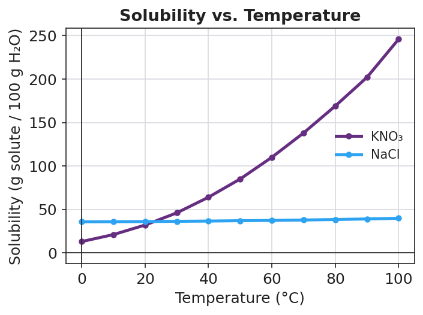

01 Phenomenon
Two glasses of plain, unsweetened tea sit on the table — one steaming hot, one full of ice. You stir one level spoon of sugar into each glass, the same number of stirs. In the hot glass the sugar disappears within seconds. In the iced glass, a small drift of crystals is still sitting on the bottom a minute later. You keep adding sugar to the iced tea, half a spoon at a time — and eventually no more will dissolve, no matter how long you stir. The hot tea, meanwhile, keeps swallowing spoon after spoon.
02 Driving question
Why does sugar dissolve faster — and more completely — in hot tea than in iced tea?
03 Notice & wonder
| I notice… | I wonder… |
|---|---|
Turn & Talk #1: In the iced tea, after a few spoons, sugar stopped dissolving and sat on the bottom. Is the sugar gone, or is something stopping more from dissolving? In one sentence, describe what you think the water is doing.
04 Initial model
Before your teacher explains anything, write your best guess. The same spoon of sugar dissolved fast in the hot tea but left crystals in the iced tea — and the iced tea eventually refused any more sugar. Why? Use a drawing, a sentence, or both.
Prediction: if you heated the iced tea, would the crystals on the bottom dissolve? Circle one — YES / NO — and say why in one sentence.
05 Investigate
Part 1 — Add and watch (room-temperature water)
Add ONE level scoop of solute to your room-temperature water. Stir until it dissolves or until you are sure it will not dissolve any more. Record. Then add another scoop. Keep going, one at a time, until you reach a scoop that will not dissolve no matter how long you stir.
| Scoop # | Fully dissolved? (Y/N) | What you observed |
|---|---|---|
| 1 | ||
| 2 | ||
| 3 | ||
| 4 | ||
| 5 | ||
| 6 |
Which scoop number was the first one that would NOT fully dissolve? _______________
What is sitting on the bottom of your cup now, and what does it tell you about the water? _______________________________________________
Part 2 — Does heat change the limit? (warm water)
Take a fresh cup of warm water (same volume as Part 1). Repeat the scoop-by-scoop addition and record.
| Scoop # | Fully dissolved? (Y/N) | What you observed |
|---|---|---|
| 1 | ||
| 2 | ||
| 3 | ||
| 4 | ||
| 5 | ||
| 6 | ||
| 7 | ||
| 8 |
How many scoops dissolved in the warm water before it reached its limit? _______________
Compare to Part 1. Did warm water hold more or less solute? _______________
Look back at your Initial Model prediction about heating the iced tea. Was your prediction correct? _______________
Part 3 — Reading the solubility curve
Look at the figure below. It shows how many grams of solute dissolve in 100 g of water at each temperature.

At 60 °C, about how many grams of KNO₃ dissolve in 100 g of water? _______________
At 20 °C, about how many grams of NaCl dissolve in 100 g of water? _______________
Which solute changes the most as temperature rises — KNO₃ or NaCl? _______________
A point that sits on the KNO₃ line means the solution is exactly full. What would a point below the line mean? What would a point above the line mean?
Below the line: _______________________________________________ Above the line: _______________________________________________
06 Make it make sense
For each scenario, classify the solution and explain your evidence.
You add salt to water and stir; it all dissolves. You add more, and more, and it keeps dissolving with no solid left behind. Classify this solution (saturated / unsaturated / supersaturated) and explain how you know.
- Classification: _______________
- Evidence: _______________________________________________
You have been adding sugar to iced tea. The last two spoons will not dissolve — a layer of sugar sits on the bottom even after long stirring. Classify this solution and explain how you know.
- Classification: _______________
- Evidence: _______________________________________________
A clear, colorless solution sits perfectly still. The instant you drop in one tiny seed crystal, the whole thing turns to solid in seconds. Classify this solution and explain how you know.
- Classification: _______________
- Evidence: _______________________________________________
Using the solubility curve: a beaker holds 100 g of water at 40 °C with 64 g of KNO₃ fully dissolved. Is this solution saturated, unsaturated, or supersaturated? (Compare 64 g to the curve value at 40 °C.)
- Classification: _______________
- Reasoning: _______________________________________________
07 Key vocabulary
- solute
- the substance that is dissolved in a solution; usually the smaller amount, spread evenly throughout the solvent (e.g., the sugar in sweet tea, the salt in sea water)
- solvent
- the substance that does the dissolving in a solution; usually the larger amount, into which the solute disperses (e.g., the water/tea that the sugar dissolves into)
- aqueous
- describing a solution in which water is the solvent; labeled (aq) in chemical equations (e.g., salt water is an aqueous solution of NaCl)
Use each term in a sentence about today’s investigation. Do not copy the definition — describe something you actually did or observed.
solute: _______________________________________________ _______________________________________________
solvent: _______________________________________________ _______________________________________________
aqueous: _______________________________________________ _______________________________________________
08 Revise your model
Return to your Initial Model. Now use today’s words to make it more precise.
In the iced-tea scenario, the solute is _______________ and the solvent is _______________.
When the iced tea refused any more sugar, the solution had become _______________ (saturated / unsaturated / supersaturated).
The solution is aqueous because _______________________________________________.
Then finish this Because / But / So sentence:
Sugar that won’t dissolve in iced tea will dissolve once the tea is heated because __________________________________________, but __________________________________________, so __________________________________________.
09 Exit ticket
(a) A glass of sea water sits in the sun. As the water evaporates, salt crystals begin forming on the side of the glass. At the moment crystals start to appear, classify the sea water (saturated / unsaturated / supersaturated) and explain your evidence.
Classification: _______________ Evidence: _______________________________________________
(b) Rubbing alcohol is a solution of isopropanol dissolved in water. Name the solute and the solvent, and state whether the solution is aqueous.
Solute: _______________ Solvent: _______________ Aqueous? _______________
(c) On a hot day, honey that had crystallized at the bottom of a jar turns clear and runny again. In one sentence, use the words “solvent” and “saturated” to explain why warming a solution can make crystallized solute redissolve.
10 Explore further
- Saturation investigation lab: Working in groups, students add a measured solute (table salt or, for the steeper effect, Epsom salt / potassium nitrate) one level scoop at a time to a fixed volume of room-temperature water, stirring and recording after each addition until no more dissolves (the first scoop that leaves permanent undissolved solid marks saturation). They then warm an identical sample and repeat, observing that more dissolves when hot. Data feed directly into reading `figures/solubility_curve.png`.
- Supersaturated sodium acetate "hot ice" demo (teacher-led): A supersaturated sodium acetate solution (made by dissolving the solid in hot water and cooling undisturbed) crystallizes on contact with a seed crystal, instantly forming warm solid "ice." This is the dramatic evidence that a supersaturated solution holds *more* dissolved solute than it normally could, and that the excess drops out the moment the balance is disturbed. CHCOONa + seed → rapid crystallization (exothermic). Safety: the solution and the resulting solid are warm, not dangerous, but treat as a demo.
- Rock candy growing (multi-day, optional launch): Students start a supersaturated sucrose solution on a string today and observe crystal growth over the following week — concrete evidence that the excess solute in a supersaturated solution comes back out of solution over time.
- Solubility-curve reading: Students use `figures/solubility_curve.png` to classify points as saturated, unsaturated, or supersaturated and to read the maximum solubility of KNO₃ and NaCl at a given temperature.